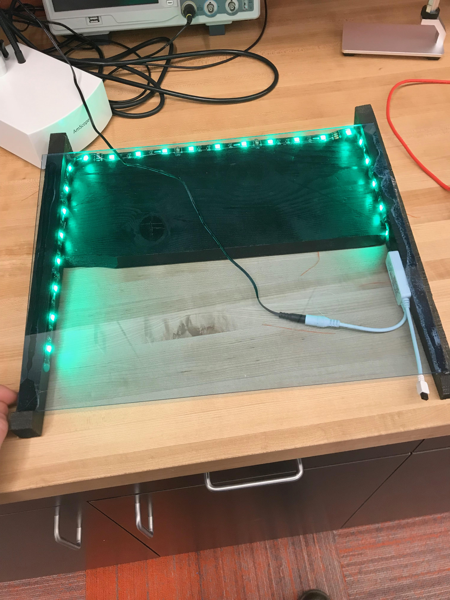

Home Page
Cycle 11
What I did
This cycle was the time to work on our final project. I decided to make a laptop stand with LED underglow.
Sadly, I was too focused on the project and forgot to take a whole bunch of pictures, so I only have one of
the completed project.

There were a decent amount of setbacks this time. First, I had to figure out a way to cut the wood to size
without using the band saw because it was making an awful noise. Second, I didn't drill big enough pilot
holes, so my wood cracked at some parts. Third, my LEDs didn't stick with the backing on them, so I had to
tear it off by hand and reglue all of it on. Finally, the way the Bluetooth connects makes it very difficult
to connect while on campus. The problem should be nonexistant at home.